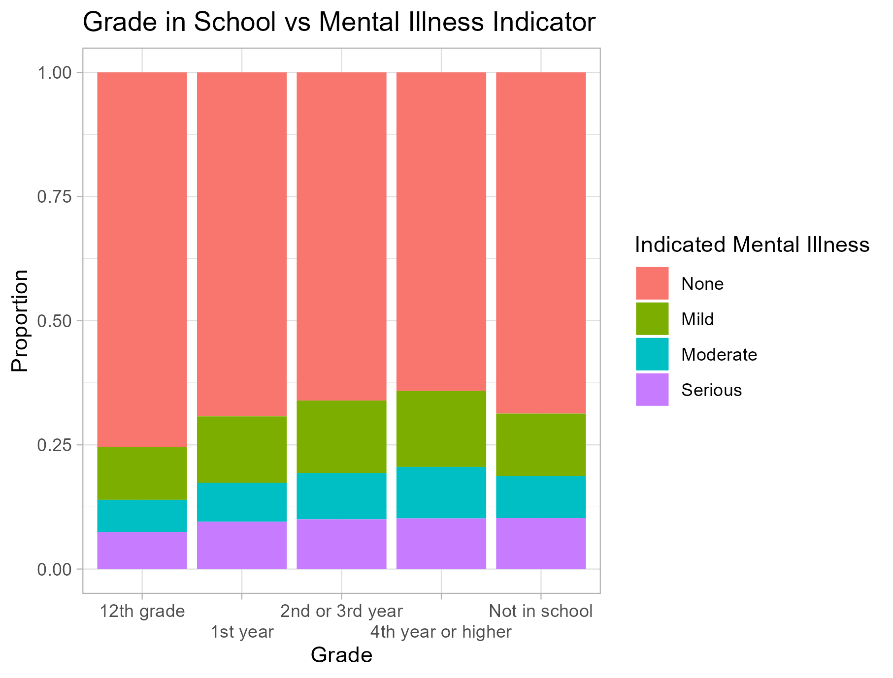

| Year | College Completion | Mean K6 | Median K6 |
|---|---|---|---|
| 2019 | Graduated | 8.10 | 7 |
| 2019 | In College | 9.35 | 8 |
| 2020 | Graduated | 8.98 | 8 |
| 2020 | In College | 9.56 | 8 |
| 2021 | Graduated | 8.80 | 8 |
| 2021 | In College | 9.64 | 9 |
Executive Summary: Impact of the Pandemic on Drug Use and Mental Health in College Students
Final Project
Data Science 1 with R (STAT 301-1)
Objective
This report explores the effects of the COVID-19 pandemic on drug use and mental health among college students, using data from the National Survey on Drug Use and Health (NSDUH) from 2019-2021. The goal is to understand the potential links between isolation and mental health outcomes, as well as any changes in drug use habits in young adults (18-25).
Data Considerations
Breakdowns in data comparability between years, owing to variations in interview formats (in-person vs. online), should be kept in mind when interpreting results.
In 2020 there was a pause in data collection due to COVID-19, resulting in a decrease in observations for the year.
Key Findings
Mental Health
- College students generally did not show any more distress than those not in college, as measured by the Kessler Psychological Distress Scale (K6), over the course of the pandemic. There were slight increases in some measures of distress in 2020 and 2021, however, the differences aren’t significant.
- Young adults showing signs of mental illness experienced worsening impairment in daily functioning, during 2020 and 2021. This impairment affected their home tasks, work tasks, close relationships, and social life.

- As students progressed through college, they were more likely to indicate mild to serious mental illness, highlighting a potential correlation between academic advancement and mental health. This could be due to advancing in age.

Drug Use
- There were no significant changes over 2019-2021 in the drug use of college students. There were some differences in drug use between those in college and those not in college. However, the freshman class of 2020 showed a higher percentage of daily marijuana users compared to 2019 and 2021, possibly due to the circumstances caused by online schooling.
| Year | College Year | % Daily or Near-Daily |
|---|---|---|
| 2019 | 1st year | 4.36 |
| 2019 | 2nd or 3rd year | 4.30 |
| 2020 | 1st year | 5.33 |
| 2020 | 2nd or 3rd year | 3.53 |
| 2021 | 1st year | 4.32 |
| 2021 | 2nd or 3rd year | 4.62 |
- Stimulant misuse was more prevalent among college students than those not in college. Students were also more likely to report using stimulants to study.

Recommendations
Since the data had mixed results on the changes in college students’ drug use and mental health, it is recommended the topic be further explored. A more comprehensive analysis could focus on the effect of the timing of the COVID-19 pandemic by looking at specific graduating classes. Additionally, the investigation could be enhanced by utilizing the American College Health Association’s National College Health Assessment, which focuses solely on college students (ACHA, 2021).
References
American College Health Association, Inc. (2021). ACHA-National College Health Assessment (NCHA). About NCHA. https://www.acha.org/NCHA/About_ACHA_NCHA/Overview/NCHA/About/About_NCHA.aspx?hkey=75eaa64f-e82c-4cfd-a19c-4e3f9bf126ee
SAMHSA. (2020). National Survey on Drug Use and Health (NSDUH) population data. National Survey on Drug Use and Health 2019 (NSDUH-2021-DS0001).https://www.datafiles.samhsa.gov/dataset/national-survey-drug-use-and-health-2019-nsduh-2019-ds0001
SAMHSA. (2021). National Survey on Drug Use and Health (NSDUH) population data. National Survey on Drug Use and Health 2020 (NSDUH-2021-DS0001).https://www.datafiles.samhsa.gov/dataset/national-survey-drug-use-and-health-2020-nsduh-2020-ds0001
SAMHSA. (2022). National Survey on Drug Use and Health (NSDUH) population data. National Survey on Drug Use and Health 2021 (NSDUH-2021-DS0001). https://www.datafiles.samhsa.gov/dataset/national-survey-drug-use-and-health-2021-nsduh-2021-ds0001